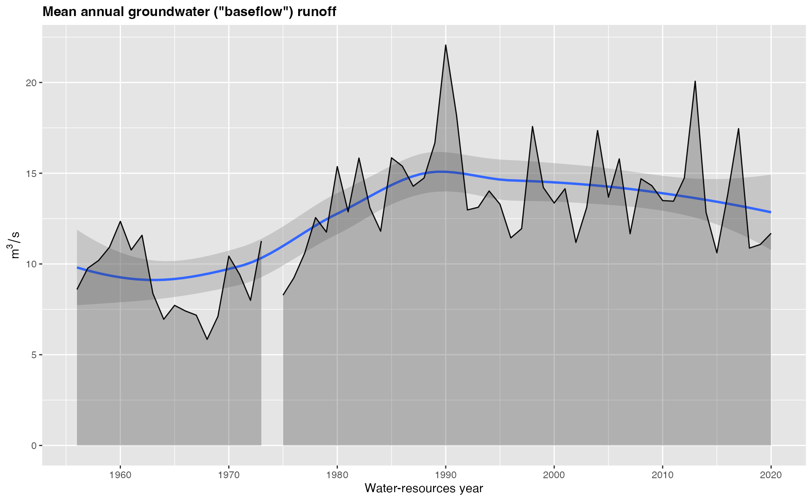
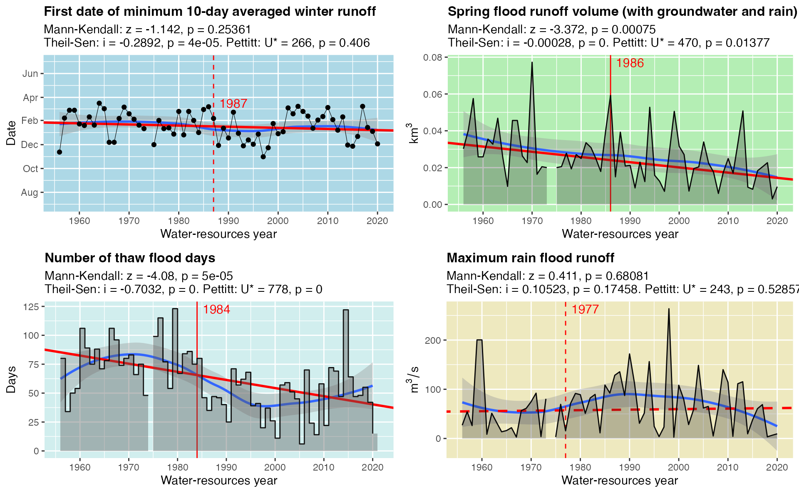

grwat is an R package for automated multi-year hydrograph analysis that provides functions to
- Preprocess hydrological data to enrich them with meteorological variables.
- Separate hydrograph into ground, seasonal, thaw and rain discharge.
- Describe obtained separation with multiple variables.
- Perform statistical tests on hydrograph variables.
- Plot interannual and long-term changes of hydrograph variables.
- Generate high-quality report files containing the full information gained during analysis.
This vignette contains a brief introduction to solving all these tasks with grwat.
Preprocess
Preprocessing joins reanalysis data to raw hydrological data on time and geographic location. It can be made using grwat in three regimes: manual, gauge folder processing and basins folder processing.
Manual preprocessing
You can join reanalysis and water level data for a single gauge as follows:
library(sf) library(grwat) wd = "/Volumes/Work/_grwat/Mezen_Malonisog/" setwd(wd) hdata = read.csv('in_Mezen_Malonisog.txt', header = FALSE, sep = ' ') # read gauge data head(hdata) #> V1 V2 V3 V4 #> 1 11 5 1945 142 #> 2 12 5 1945 146 #> 3 13 5 1945 148 #> 4 14 5 1945 158 #> 5 15 5 1945 175 #> 6 16 5 1945 212 basin = st_read('Mezen_Malonisog.gpkg', quiet = TRUE) # read basin region basin_pr = grwat::st_buffer_geo(basin, 50000) # buffer region by 50 km rean = grwat::read_interim('prec.nc', 'temp.nc') # read reanalysis data hdata_rean = grwat::join_interim(hdata, rean, basin_pr) # join reanalysis data to hydrological series head(hdata_rean$df) #> N Y M D T P L #> 1 23872 1945 5 11 -3.61 1.081 142 #> 2 23873 1945 5 12 -0.41 3.266 146 #> 3 23874 1945 5 13 -0.05 5.723 148 #> 4 23875 1945 5 14 -0.19 1.774 158 #> 5 23876 1945 5 15 -0.26 1.690 175 #> 6 23877 1945 5 16 -0.89 1.648 212
After reanalysis data are joined you can easily plot a map of the derived spatial configuration with
grwat::map(rean$pts, hdata_rean$pts, basin, basin_pr) # plot spatial configuration

Gauge folder
Grwat can preprocess hydrological data that is inside one gauge folder. That folder should contain two files:
- Text file with hydrological data in CSV format, space-separated (
.txtextension) - Spatial data file with polygon of a gauge watershed area in Geopackage (
.gpkgextension) or Shapefile (.shpextension) format
The name of the file is not restricted, only the extension and the format. Here is an example:

Reanalysis data should be read before using read_interim() function from grwat package. Having these prerequisities satisfied, the command is:
grwat::process_gauge(wd, rean, bufsize = 50000) # process single folder
The value returned by this function is a number of reanalysis points extracted by buffered basin region. As a result of the execution of this function the folder receives two enriched data files and a map of the spatial configuration:

We recommend using GeoPackage because it is fast and powerful OGC-standardized modern spatial data format that does not include any sidecar files like Esri Shapefile. You can easily convert many spatial data formats to GeoPackage by QGIS Export > Save as… command in a layer context menu, using
st_readand thenst_writefunctions fromsfR package, or via GDAL utils if you prefer command line or need batch processing (which can also be automated in R). Note that if you use Shapefile format for basin border representation, you should also preserve.dbfand.shxsidecar files that store attribute information and relation between attributes and geometry. Otherwise the shapefile cannot be read correctly.
Basins folder
Basins mode provides automation of reanalysis data joining across multiple basins and gauges. It is based on a fixed folder structure that should be organized by user. This structure is:
- The top-level folder specified by user must contain only one folder, which is called in.
- This in folder contains an arbitrary number of folders (at least one), each of those corresponding to a single river basin.
- Each river basin folder contains an arbitrary number of folders (at least one), each of those corresponding to a single river gauge.
- Each gauge folder contains strictly two files: a
.txtfile with hydrological data, and.gpkgor.shpfile with polygon of a gauge watershed area.
The names of basin and gauge folders are not restricted, but we highly recommend begin with a letter and proceed with alphanumerical symbols, underscore and a hyphen from ASCII encoding (a-z, A-Z, 0-9, _, -)
An example of specified directory structure is provided in the picture below:

The processing of this folder structure is performed by process_basins() function:
wd = "/Volumes/Work/_grwat/2018/" grwat::process_basins(wd, rean, bufsize = 50000) # process single folder
It works in a following way:
process_basins()takes in folder inside folder specified bywdparameter and copies its content to a new out folder in the same directory. All the following procedures are executed inside out folder, which allows easy removal of results and rexecution of the processing if some parameters should be changed.Every gauge folder is processed using
process_gauge()function which produces enriched data files and a map inside each gauge folder.-
process_basins()also produces summary.txt files inside each basin folder and one summary.txt file directly in out folder. These files contain a number of reanalysis points for each gauge’s watershed. These are two special cases:- 0 means that no reanalysis data are found inside a watershed
- -1 means that there were problems either reading
.txtor.gpkg/.shpfile
In both cases the corresponding gauge folder will not contain any new files inside, and the further exploration of the problem should be taken by user. 0 means that the watershed is located outside the extent of reanalysis data or it is too small in comparison with spatial sampling of reanalysis data. Try increasing buffer size. -1 means that there are problems with your input files, and solution depends on the exact case (you must diagnose the reasons by yourself).
An example of resulting directory structure is provided in the picture below:

Separate and describe
Currently separation and description procedures are unavalable inside grwat package and are performed using external command-line Fortran1 program that produces two files:
- AllGrWat.txt contains hydrograph separation data
- Total.txt contains multiple variables describing the separated hydrograph
These output data can be visualised and statistically assessed by grwat functions that are uncovered in the next section.
We recommend placing these files in the same folder as processed data like in a picture below:

Plot and test
These functions from grwat package allow you to:
- Plot separation of hydrograph
- Plot interannual changes of key water discharge variables
- Plot long-term changes of key water discharge variables
- Perform statistical tests on all calculated variables
Currently only English locale is provided in plots. In future releases Russian locale will also be added
Plot separation of hydrograph
To plot separation of hydrograph you need results of a separation procedure which are saved as AllGrWat.txt text file (see previous section). This file is read by read_separation() function:
setwd("/Volumes/Work/_grwat/Mezen_Malonisog/") sep = grwat::read_separation('AllGrWat.txt')# head(sep) #> # A tibble: 6 x 8 #> Date Qin Qgr Qpol Qpav Qthaw Tin Pin #> <date> <dbl> <dbl> <dbl> <dbl> <dbl> <dbl> <dbl> #> 1 1938-03-23 43.3 43.3 0 0 0 9999 9999 #> 2 1938-03-24 56.9 39.7 17.2 0 0 9999 9999 #> 3 1938-03-25 77.7 36.1 41.6 0 0 9999 9999 #> 4 1938-03-26 150 32.5 118. 0 0 9999 9999 #> 5 1938-03-27 334 28.9 305. 0 0 9999 9999 #> 6 1938-03-28 429 25.3 404. 0 0 9999 9999
You can then plot separations for selected years using plot_separation() function:
grwat::plot_separation(sep, 1978) # plot single year

grwat::plot_separation(sep, c(1994, 2001)) # plot two years sequentially

grwat::plot_separation(sep, 1994:1997, # plot four years on the same page layout = matrix(c(1,2,3,4), nrow=2, byrow=TRUE))

Read and test hydrograph variables
Interannual changes of parameters are read from Total.txt file using read_variables() function:
setwd("/Volumes/Work/_grwat/Mezen_Malonisog/") df = grwat::read_variables('Total.txt') # read parameters file #> Warning: 3 failed to parse. head(df) #> # A tibble: 6 x 57 #> year_number Year1 Year2 datestart datepolend Qy Qmax datemax Qygr #> <int> <int> <int> <date> <date> <dbl> <dbl> <date> <dbl> #> 1 1 1938 1939 2000-03-23 2000-06-08 98.1 747 2000-04-03 19.9 #> 2 2 1939 1940 2000-03-16 2000-07-11 66.9 487 2000-04-28 14.8 #> 3 3 1940 1941 2000-03-09 2000-07-12 97.4 995 2000-04-28 18.9 #> 4 4 1941 1942 2000-03-24 2000-07-21 214. 2030 2000-05-01 31.4 #> 5 5 1942 1943 2000-04-02 2000-07-31 242. 2790 2000-05-08 26.9 #> 6 6 1943 1944 2000-03-24 2000-06-15 71.3 451 2000-05-02 26.5 #> # … with 48 more variables: Qmmsummer <dbl>, monmmsummer <date>, Qmmwin <dbl>, #> # nommwin <date>, Q30s <dbl>, date30s1 <date>, date30s2 <date>, Q30w <dbl>, #> # date30w1 <date>, date30w2 <date>, Q10s <dbl>, date10s1 <date>, #> # date10s2 <date>, Q10w <dbl>, date10w1 <date>, date10w2 <date>, Q5s <dbl>, #> # date5s1 <date>, date5s2 <date>, Q5w <dbl>, date5w1 <date>, date5w2 <date>, #> # Wy <dbl>, Wgr <dbl>, Wpol1 <dbl>, Wpol2 <dbl>, Wpol3 <dbl>, Wpavs1 <dbl>, #> # Wpavs2 <dbl>, Wpavthaw1 <dbl>, Wpavthaw2 <dbl>, WgrS <dbl>, WS <dbl>, #> # WgrW <dbl>, WW <dbl>, Qmaxpavs <dbl>, datemaxpavs <date>, #> # Qmaxpavthaw <dbl>, datemaxpavthaw <date>, SumProd <int>, DaysPavsSum <dbl>, #> # WinProd <int>, DaysThawWin <dbl>, CvWin <dbl>, CvSum <dbl>, #> # CountPavs <int>, CountThaws <int>, PolProd <int>
To get the detailed description of available variables you can invoke get_parameters():
grwat::get_variables() #> # A tibble: 57 x 19 #> ID Position Width Source Name Units Unitsen Readtype Type Test Desc #> <dbl> <dbl> <dbl> <dbl> <chr> <chr> <chr> <chr> <chr> <dbl> <chr> #> 1 1 1 7 1 year… <NA> <NA> integer inte… 0 Номе… #> 2 2 8 10 1 Year1 Год Year integer inte… 0 Год,… #> 3 3 18 10 1 Year2 Год Year integer inte… 0 Год,… #> 4 4 28 15 1 date… Дата Date Date Date 1 Дата… #> 5 5 43 15 1 date… Дата Date Date Date 1 Дата… #> 6 6 58 10 1 Qy м^3/с m^3/s double doub… 1 Сред… #> 7 7 68 10 1 Qmax м^3/с m^3/s double doub… 1 Макс… #> 8 8 78 15 1 date… Дата Date Date Date 1 Дата… #> 9 9 93 10 1 Qygr м^3/с m^3/s double doub… 1 Сред… #> 10 10 103 10 1 Qmms… м^3/с m^3/s double doub… 1 Мини… #> # … with 47 more rows, and 8 more variables: Descen <chr>, Group <chr>, #> # Winter <dbl>, Chart <chr>, Color <chr>, Order <dbl>, Range <chr>, #> # Problems <chr>
Parameters can be statistically tested using test_variables(df, ..., year = NULL, locale='EN') function. Names of the parameters are passed comma-separated in place of .... They are quoted, so you do not need to pass them as character strings, just write their names:
grwat::test_variables(df, Qmax) #> Warning: `select_()` is deprecated as of dplyr 0.7.0. #> Please use `select()` instead. #> This warning is displayed once every 8 hours. #> Call `lifecycle::last_warnings()` to see where this warning was generated. #> $ptt #> $ptt$Qmax #> #> Pettitt's test for single change-point detection #> #> data: vl[vl_cmp] #> U* = 768, p-value = 0.000508 #> alternative hypothesis: two.sided #> sample estimates: #> probable change point at time K #> 44 #> #> #> #> $mkt #> $mkt$Qmax #> #> Mann-Kendall trend test #> #> data: vl[vl_cmp] #> z = -4.1079, n = 75, p-value = 3.993e-05 #> alternative hypothesis: true S is not equal to 0 #> sample estimates: #> S varS tau #> -899.0000000 47787.6666667 -0.3241977 #> #> #> #> $tst #> $tst$Qmax #> #> Sen's slope #> #> data: values #> z = -4.1079, n = 75, p-value = 3.993e-05 #> alternative hypothesis: true z is not equal to 0 #> 95 percent confidence interval: #> -15.516129 -4.285714 #> sample estimates: #> Sen's slope #> -9.285714 #> #> #> #> $ts_fit #> $ts_fit$Qmax #> #> Call: #> mblm::mblm(formula = eval(frml), dataframe = df.theil, repeated = FALSE) #> #> Coefficients: #> (Intercept) Year1 #> 19013.714 -9.286 #> #> #> #> $tt #> $tt$Qmax #> #> Welch Two Sample t-test #> #> data: d1 and d2 #> t = 4.1012, df = 70.533, p-value = 0.0001086 #> alternative hypothesis: true difference in means is not equal to 0 #> 95 percent confidence interval: #> 270.2942 781.9355 #> sample estimates: #> mean of x mean of y #> 1104.3023 578.1875 #> #> #> #> $ft #> $ft$Qmax #> #> F test to compare two variances #> #> data: d1 and d2 #> F = 2.7011, num df = 42, denom df = 31, p-value = 0.004993 #> alternative hypothesis: true ratio of variances is not equal to 1 #> 95 percent confidence interval: #> 1.362952 5.175132 #> sample estimates: #> ratio of variances #> 2.701111 #> #> #> #> $year #> Qmax #> 1981 #> #> $maxval #> $maxval$Qmax #> [1] 2790 #> #> #> $fixed_year #> [1] FALSE #> #> $pvalues #> N Variable Change.Year Trend #> 1 1 Maximum annual discharge during seasonal flood wave 1981 -9.28571 #> M1 M2 MeanRatio sd1 sd2 sdRatio Mann.Kendall Pettitt #> 1 1104.302 578.1875 -47.6 687.4269 418.2687 -39.2 4e-05 0.00051 #> Student Fisher #> 1 0.00011 0.00499
This is an example with three variables selected:
tests = grwat::test_variables(df, Qygr, date10w1, Wpol3) tests$pvalues #> N Variable #> 1 1 Annual groundwater discharge ("baseflow") during water-resources year #> 2 2 First date of 10-day window discharge during winter #> 3 3 Seasonal flood runoff (with groundwater and rainwater) #> Change.Year Trend M1 M2 MeanRatio sd1 sd2 sdRatio #> 1 1975 0.56385 27.17243 51.91974 91.1 5.45524 16.05091 194.2 #> 2 1971 -0.27660 30-Dec 02-Dec -28.0 39.00000 59.00000 51.3 #> 3 1981 -0.02026 2.92196 1.84939 -36.7 1.64315 1.02748 -37.5 #> Mann.Kendall Pettitt Student Fisher #> 1 0.00000 0.00000 0.00000 0.00000 #> 2 0.27215 0.21652 0.01556 0.01852 #> 3 0.00246 0.01007 0.00090 0.00780
If you want to test all parameters, just skip variable names:
tests = grwat::test_variables(df) tests$change_year #> NULL
Long-term changes are tested against breaking year, which is calculated for each variable using Pettitt test. However, if you want to use a fixed year, you should pass the desired breaking year into change_year parameter:
tests = grwat::test_variables(df, Qmax, Qygr, change_year = 1987) tests$ft # Fisher F tests to compare two variances #> $Qmax #> #> F test to compare two variances #> #> data: d1 and d2 #> F = 2.7011, num df = 42, denom df = 31, p-value = 0.004993 #> alternative hypothesis: true ratio of variances is not equal to 1 #> 95 percent confidence interval: #> 1.362952 5.175132 #> sample estimates: #> ratio of variances #> 2.701111 #> #> #> $Qygr #> #> F test to compare two variances #> #> data: d1 and d2 #> F = 0.11551, num df = 36, denom df = 37, p-value = 2.678e-09 #> alternative hypothesis: true ratio of variances is not equal to 1 #> 95 percent confidence interval: #> 0.0598440 0.2236352 #> sample estimates: #> ratio of variances #> 0.1155124
Plot interannual changes
Interannual changes are visualized using plot_variables() function. Its syntax is similar to test_variables() and plot_separation():
grwat::plot_variables(df, Qmax) # plot one selected variable

grwat::plot_variables(df, date10w1, Wpol3) # plot two variables sequentially


grwat::plot_variables(df, Qmax, Qygr, date10w1, Wpol3, # plot four variables in matrix layout layout = matrix(c(1,2,3,4), nrow=2, byrow=TRUE))

You can add the results of statistical tests to the plot by specifying the result of test_variables() function to the tests parameter. In that case the subtitle with test results will be added, Theil-Sen slope and Pettitt test breaking year are drawn as solid (\(p \leq 0.05\)) or dashed (\(p > 0.05\)) lines:
grwat::plot_variables(df, date10w1, Wpol3, DaysThawWin, Qmaxpavs, tests = test_variables(df, date10w1, Wpol3, DaysThawWin, Qmaxpavs)) # add test information


Note that
testsparameter ofplot_variables()expects the tests for the same variables as those selected for plotting. If you plot variables A, B, C and supply tests for variables X, Y, Z, they will be added without any warnings, and it is your responsibility to keep them in correspondence with each other
Finally, you can plot all variables by not supplying column names to plot_variables() function. In that case tests (if you want to plot them too) should also be calculated for all variables:
grwat::plot_variables(df, tests = test_variables(df))
Plot long-term period changes
Long-term changes are the differences between summarized statistics of one variable calculated for two selected periods. Because these statistics reflect the differences in distributions of parameters, grwat visualizes them as box plots using plot_periods() function. The syntax is similar to plot_variables() except that you must provide either tests or year parameter. If both are supplied then tests is prioritized (you can also supply a fixed year when testing variables:
grwat::plot_periods(df, Qy, year = 1978)

grwat::plot_periods(df, Qy, tests = test_variables(df, Qy))

Multiple plots can be combined on one page using layout parameter:
grwat::plot_periods(df, Qy, Qmax, tests = test_variables(df, Qy, Qmax), layout = matrix(c(1,2)))

To plot long-term changes for all variables just skip variable names in function call:
grwat::plot_periods(df, tests = test_variables(df))
There is also a small helper function that plots a histogram of minimal discharge month for summer and winter periods:
grwat::plot_minmonth(df, year = 1978)

Report
The final feature of grwat package is reporting. Previous sections demonstrated various functions that allow different level of data processing: from individual tables, plots and maps to fully processed folders, tests and plots of multiple variables. Reporting allows you to produce a single PDF file that provides a comprehensive overview of hydrograph separation and water discharge variables for the whole time period covered by your data. There are currently two functions that work with folder data:
-
report_gauge()generates a report for a gauge folder containing separation fileAllGrWat.txt, variables fileTotal.txtand map file*.png. -
report_basins()generates multiple reports for the hierarchy of basin and gauge folders. It actually runsreport_gauge()for every leaf subdirectory in the provided path.
The syntax of these functions is straightforward:
grwat::report_gauge("/Volumes/Work/_grwat/2018/out/1_Sever/Mezen_Malonisog") grwat::report_basins("/Volumes/Work/_grwat/2018/out/")
As a result of reporting each gauge folder gains report.pdf (report) and pvalues

A report file contains 5 sections:
- Input data
- Hydrograph separation
- Interannual changes
- Long-term changes
- Statistical tests
They are organized in a compact form with multiple plots per page:

Note that reporting is a time-consuming operation since it produces dozens of high-quality plots. Therefore it is reasonable to run reporting functions from a separate R session if you want to perform another tasks in R at the same time. Or take a cup of coffee and watch your favourite TV series.
In the next release of grwat package separation stage will be rewritten in C++ using Rcpp package to provide the complete workflow inside R ecosystem↩︎